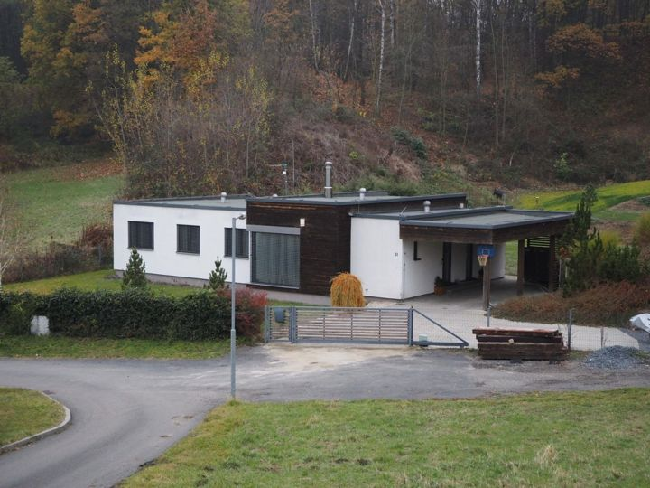
New to tracker — actual advert age unknown
Prodej domu Hluboká, Ostrava - Petřkovice u Ostravy, Moravskoslezský kraj
Prodej domu Hluboká, Ostrava - Petřkovice u Ostravy, Moravskoslezský kraj
Not stated → 14,900,000 CZK
Original advert ↗Daily market update · 2026-11-09 · Ostrava + 15 km
Data limitation: Prices are advertised, not completed transaction prices. Disappeared adverts are NOT proof of sold or rented status. Search radius may be unverified for individual locations. "New" means first observed since a comparable complete Sreality scan, not independently verified as newly published. "New to tracker" may reflect expanded or partial portal coverage. Older Sreality IDs and known cross-lists are excluded. Additional monthly rental charges are not reliably supplied in these search cards.

Prodej domu Hluboká, Ostrava - Petřkovice u Ostravy, Moravskoslezský kraj
Not stated → 14,900,000 CZK
Original advert ↗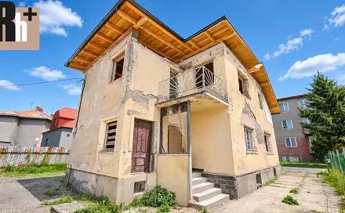
Zlevněno prodej domu 190 m² s pozemkem 532 m² Boční, Ostrava - Muglinov 4 800 000 Kč
Not stated → 4,800,000 CZK
Original advert ↗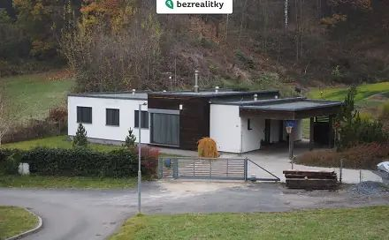
Nové prodej domu 150 m² s pozemkem 4 880 m² Hluboká, Ostrava - Petřkovice 14 900 000 Kč
Not stated → 14,900,000 CZK
Original advert ↗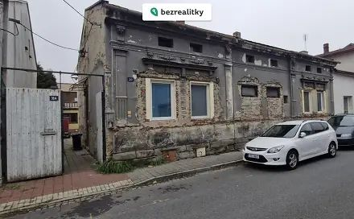
Nové prodej domu 191 m² s pozemkem 387 m² Varšavská, Ostrava - Hulváky 7 581 200 Kč
Not stated → 7,581,200 CZK
Original advert ↗
Poruba, Karviná
4,500,000 CZK → Not stated
Original advert ↗
Bohumín, Karviná
2,799,999 CZK → Not stated
Original advert ↗
Bludovice, Karviná
Not stated → 6,900,000 CZK
Original advert ↗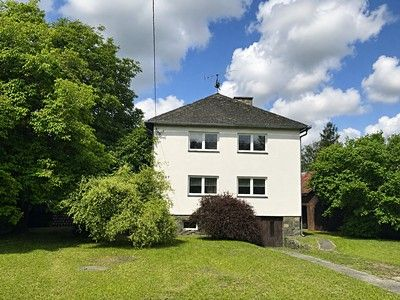
Bartošovice, Nový Jičín
6,500,000 CZK → Not stated
Original advert ↗
Sedlnice, Nový Jičín
6,350,000 CZK → Not stated
Original advert ↗
Vratimov, Ostrava-město
10,490,000 CZK → Not stated
Original advert ↗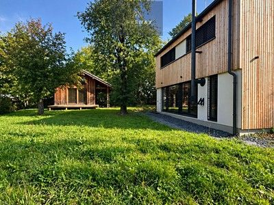
Petřvald 1-Petřvald, Nový Jičín
10,900,000 CZK → Not stated
Original advert ↗
Hrušov, Ostrava-město
5,995,000 CZK → Not stated
Original advert ↗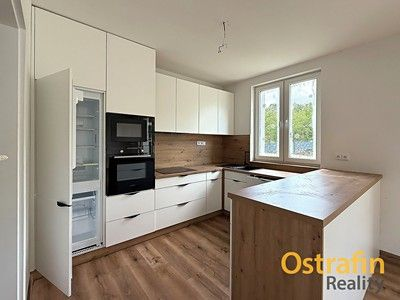
Poruba, Karviná
6,750,000 CZK → Not stated
Original advert ↗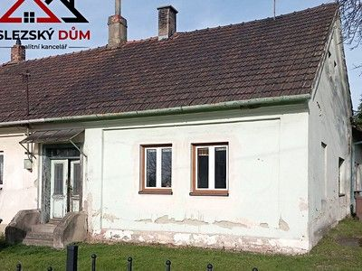
Karviná, Karviná
1,700,000 CZK → Not stated
Original advert ↗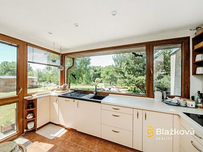
Ostrava, Ostrava-město
8,800,000 CZK → Not stated
Original advert ↗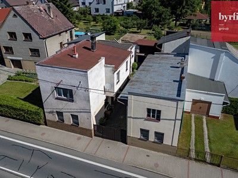
Velké Hoštice, Opava
5,700,000 CZK → 5,605,600 CZK -1.66%
Original advert ↗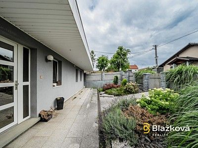
Frýdek-Místek, Frýdek-Místek
8,500,000 CZK → 7,900,000 CZK -7.06%
Original advert ↗Staříč, Frýdek-Místek
8,500,000 CZK → 7,900,000 CZK -7.06%
Original advert ↗
Horní Těrlicko, Karviná
6,690,000 CZK → Not stated
Original advert ↗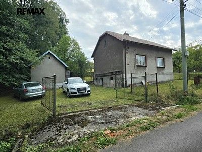
Rychvald, Karviná
3,800,000 CZK → 3,700,000 CZK -2.63%
Original advert ↗
Prostřední Bludovice, Karviná
6,390,000 CZK → Not stated
Original advert ↗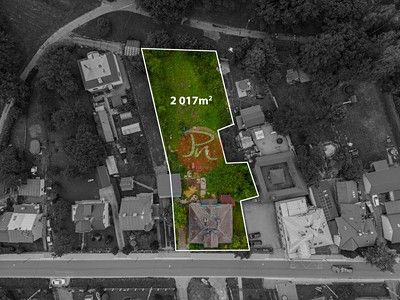
Lázně Darkov, Karviná
5,780,000 CZK → Not stated
Original advert ↗
Muglinov, Ostrava-město
9,800,000 CZK → Not stated
Original advert ↗
Klimkovice, Ostrava-město
5,990,000 CZK → Not stated
Original advert ↗
Místek, Frýdek-Místek
12,990,000 CZK → 12,790,000 CZK -1.54%
Original advert ↗Místek, Frýdek-Místek
12,990,000 CZK → 12,790,000 CZK
Original advert ↗
Pustějov, Nový Jičín
3,850,000 CZK → Not stated
Original advert ↗
Vítkovice, Ostrava-město
4,999,000 CZK → Not stated
Original advert ↗
Muglinov, Ostrava-město
4,800,000 CZK → Not stated
Original advert ↗
Místek, Frýdek-Místek
7,590,000 CZK → 7,290,000 CZK -3.95%
Original advert ↗Místek, Frýdek-Místek
7,590,000 CZK → 7,290,000 CZK
Original advert ↗
Jistebník, Nový Jičín
5,100,000 CZK → Not stated
Original advert ↗
Skřečoň, Karviná
6,450,000 CZK → 6,450,000 CZK
Original advert ↗
Rychvald, Karviná
5,000,000 CZK → Not stated
Original advert ↗
Petřvald, Karviná
9,710,000 CZK → Not stated
Original advert ↗
Zábřeh, Ostrava-město
13,230,000 CZK → Not stated
Original advert ↗
Horní Suchá, Karviná
10,590,000 CZK → 10,590,000 CZK
Original advert ↗
Orlová, Karviná
6,300,000 CZK → Not stated
Original advert ↗
Albrechtice, Karviná
2,990,000 CZK → Not stated
Original advert ↗
Prostřední Bludovice, Karviná
6,850,000 CZK → Not stated
Original advert ↗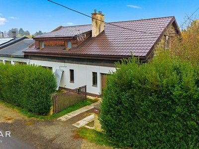
Starý Bohumín, Karviná
Not stated → 3,790,000 CZK
Original advert ↗
Ostrava, Ostrava-město
10,990,000 CZK → Not stated
Original advert ↗
Šenov, Ostrava-město
8,800,000 CZK → Not stated
Original advert ↗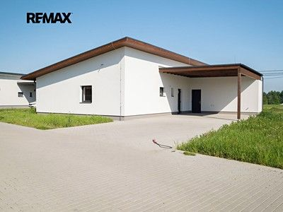
Horní Domaslavice, Frýdek-Místek
Not stated → 7,800,000 CZK
Original advert ↗